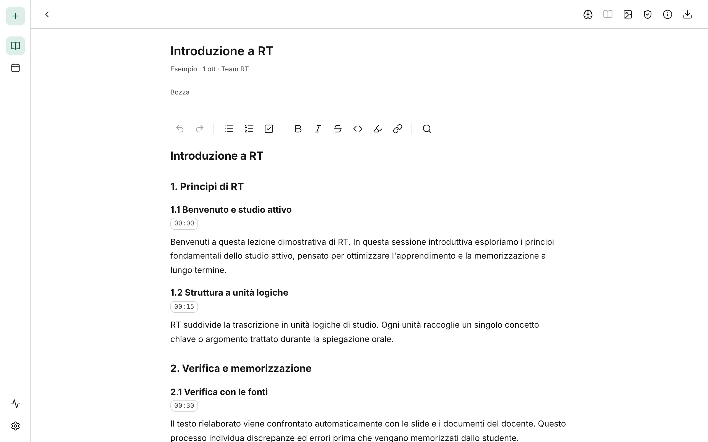

Dalla lezione registrata a un testo da studiare
RT trascrive la registrazione, toglie digressioni e ripetizioni, la divide in unità chiare e la confronta con le slide del docente. Poi ti aiuta a studiarla e a ripassarla.
Usi la tua chiave di un fornitore AI e paghi solo quello che consumi, direttamente a lui.

Come funziona
Una lezione di 90 minuti è piena di pause, ripetizioni e domande dal fondo dell'aula. RT ne tira fuori il contenuto e te lo restituisce in ordine.
Registra o carica
Registra la lezione dal microfono oppure carica un file audio o video che hai già.
Aggiungi le fonti
Allega slide, dispense o appunti. Per ognuna dici quanto è affidabile.
Rielabora e verifica
RT trascrive, riscrive in unità logiche e segnala dove il testo non torna con le fonti.
Studia e ripassa
Leggi un'unità alla volta, segna cosa hai appreso e mettiti alla prova con le domande.
Perché non dare la trascrizione a un chatbot?
Puoi farlo, ma perdi il legame con la registrazione e nessuno controlla il risultato. RT lavora diversamente.
Ogni parola ha il suo minuto
La trascrizione tiene il tempo e la sicurezza di ogni parola. Dal testo torni al punto esatto dell'audio, e il player segue l'unità che stai leggendo.
Verifica con le fonti
Il testo viene confrontato con i materiali del docente. Incongruenze, omissioni e dubbi diventano segnalazioni che controlli tu.
Unità di studio, non un muro di testo
La lezione è divisa in sezioni e unità, ognuna con le sue parole chiave e le sue domande.
Studio attivo
Modalità lettura, lettura veloce, evidenziazioni e stati di studio personalizzati per sapere sempre a che punto sei.
Ripasso e autovalutazione
Quiz, domande mirate o ampie e modelli di domanda tuoi. RT valuta la risposta e, quando serve, ti fa una domanda di approfondimento.
Organizzazione
Calendario delle lezioni con il tuo orario, esportazione in PDF e Markdown, accesso in lettura dal telefono.
Porta la tua chiave
RT è gratuito. Per trascrivere e rielaborare usa un fornitore di modelli AI che scegli tu (per esempio OpenRouter, OpenAI o Google), con la tua chiave.
- Paghi solo i token che usi, direttamente al fornitore. Nessun abbonamento a RT.
- RT ti mostra una stima del costo per lezione con il modello che hai scelto.
- Al primo avvio trovi una lezione di esempio già pronta, gratis, per provare tutto.
I tuoi dati restano tuoi
RT gira sul tuo computer. Non c'è un account, non c'è un server del progetto e non raccoglie statistiche d'uso.
- Lezioni, audio, testi e chiavi restano sul computer.
- Escono solo i testi da elaborare, verso il fornitore AI che hai scelto. L'audio esce solo se scegli la trascrizione online.
Software libero
Il codice di RT è pubblico sotto licenza AGPL-3.0: puoi leggerlo, modificarlo e ridistribuirlo. Se RT ti fa risparmiare tempo, puoi aiutarlo a crescere.